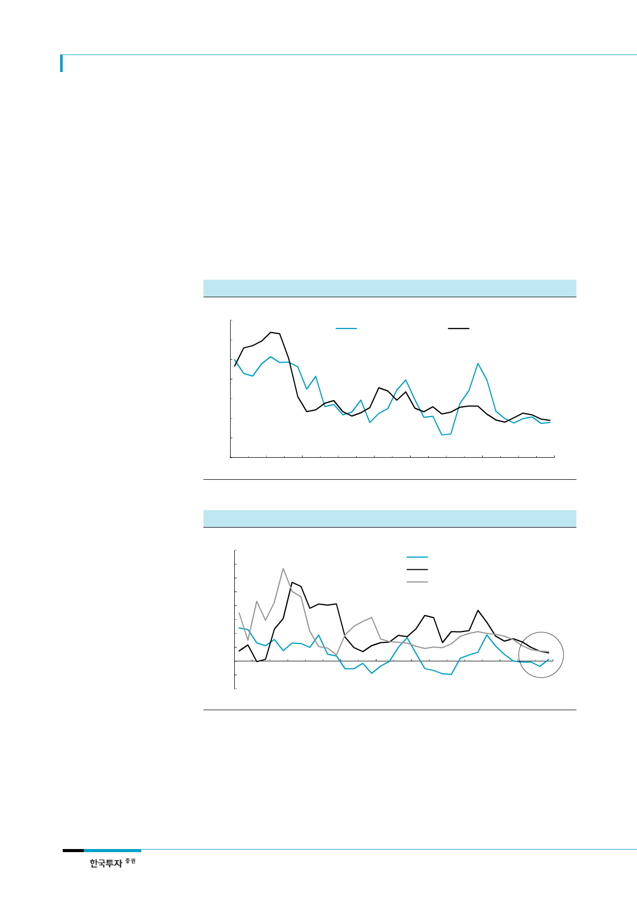

SK하이닉스(000660)
2017년 하반기 디램 수요
증가율 19%로 낮아질 전망
PC supply chain 재고조정
이미 시작
8
II. 디램 수급 악화와 높은 밸류에이션
1. 디램 가격 상승으로 수요 둔화 예상
디램 가격 상승으로 인한 제조업체들의 원가상승과 PC 및 서버수요 부진에 따른 채용량 증
가의 한계로 디램 수요증가율이 둔화될 전망이다. 2017년 하반기 디램 수요증가율은 19%로
상반기 31% 대비 크게 낮아져 디램 수급 약세의 원인이 될 것이다. 하반기 PC디램, 모바일
디램, 서버디램의 수요증가율을 각각 5%, 36%, 29%로 예상한다. 디램 공급증가율은 2017
년 20%, 2018년 21%로 낮게 유지되겠지만 수요둔화로 디램 수급이 약세를 보일 것으로 예
상한다.
[그림 13] 디램 수요증가율 vs. 공급증가율 추이
(%)
70
60
50
40
30
20
10
0
1Q10
1Q11
1Q12
디램 수요 YoY 증가율
디램 공급 YoY 증가율
1Q13 1Q14 1Q15 1Q16 1Q17 1Q18F
자료: Gartner, 한국투자증권
[그림 14] PC디램 수요증가율 vs. 스마트폰 모바일디램 채용량 증가율 vs. 서버디램 채용량 증가율 추이
(%)
160
140
120
100
80
60
40
20
0
(20)
(40)
1Q10
1Q11
1Q12
1Q13
1Q14
PC디램 수요 증가율
스마트폰 모바일디램 채용량 증가율
서버디램 채용량 증가율
1Q15 1Q16 1Q17 1Q18F
자료: Gartner, 한국투자증권
PC supply chain의 재고증가와 수요 부진으로 PC supply chain의 부품재고조정은 이미 시
작됐다. 미국의 PC 및 주변기기 재고 금액은 지난 2월을 정점으로 감소하기 시작했다. PC
DRAM 가격이 강세를 유지하고 있음에도 PC 관련 제품과 부품의 재고 금액이 감소하기 시
작했다는 것은 부품구매를 줄이기 시작했다는 의미로 볼 수 있다. 간접적이기는 하지만 지난
4월 이후 PC용 LCD패널 가격 하락폭이 확대되고 있다는 점으로도 PC supply chain의 재
고조정을 확인할 수 있다.